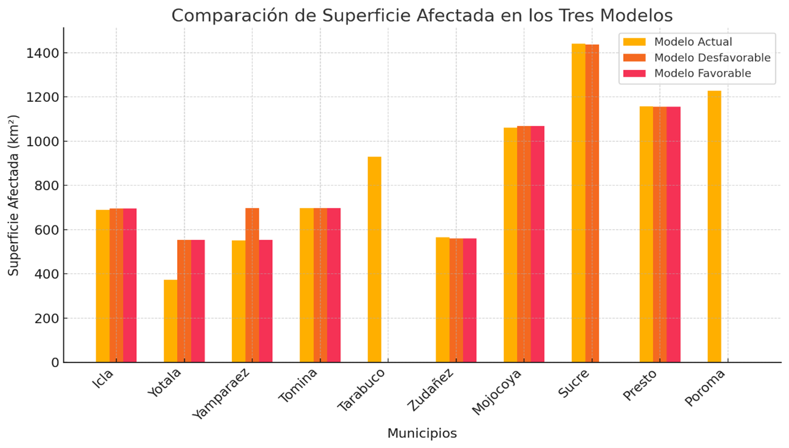

Inicio
El Chagas es una enfermedad parasitaria endémica en América causada por el parásito Trypanosoma Cruzi transmitida por el vector Triatoma infestans (Vinchuca). Aunque la enfermedad se encuentra en toda América, tiene una mayor prevalencia en las regiones rurales de América Latina, esta fue descubierta y descrita en 1909 por el Dr. Carlos Ribeiro Justiniano Das Chagas (1879-1934), médico sanitarista que a principios de siglo se desempeñaba en el Instituto Bacteriológico de Manguinhos (hoy Instituto Oswaldo Cruz) de Río de Janeiro, Brasil.

El principal transmisor de la enfermedad de Chagas en Chuquisaca, Bolivia, es un insecto conocido como vinchuca o chinche besucona (Triatoma infestans).
Bolivia es uno de los países con mayor prevalencia de la enfermedad de Chagas en el mundo. Según datos de la Coalición Chagas (2021), más de 600.000 personas viven con la infección y se estima que hay una media anual de más de 8.000 nuevas infecciones por picadura del vector Triatoma infestans (Vinchuca), que es el insecto portador del parásito Trypanosoma cruzi.
Distribución espacial
La evidencia genética indica que Triatoma infestans, el vector de la enfermedad de Chagas se originó en la región de Cochabamba y Sucre en Bolivia, en esta área existen focos selváticos de esta especie que habitan entre rocas y en asociación con roedores. La caza y cría de estos roedores por parte de los humanos pudo haber facilitado la domesticación de este vector (T. infestans) hace aproximadamente 3000-4000 años (Dujardin, 1998).
La forma doméstica de T. infestans se diseminó desde Bolivia en asociación con migraciones humanas. Una de las primeras dispersiones estuvo relacionada con los indios Chinchorro, que migraron hacia los valles del norte de Chile. En la región de Tarapacá, momias de hace aproximadamente 4000 años muestran signos de enfermedad de Chagas crónica, y se encuentra ADN del parásito en sus tejidos (Rothammer, Allison, Nunez, Staden, & Arriaza, 1999).
Segun datos del GBIFF estos son los municipipos de donde se registra presencia del vector (T.I.)
Estos son los municipipos de donde no se registra presencia del vector (T.I.)
Modelos de distribución de especies
Para conocer la distribución espacial del vector T.I. se modela la distribución especies y se utiliza el modelo de máxima entropía en el modelo nuestras variables serán las variables ambientales.
a continuación se presentan los siguientes modelos globales y regionales de temperatura y precipitacion
Los modelos globales son útiles para entender patrones biogeográficos amplios y cómo los cambios climáticos globales pueden influir en la distribución de las especies.
Los modelos regionales proporcionan una base sólida para el análisis regional y más específico de las variables ambientales.

Este modelo ofrece una resolución mucho más detallada, lo que permitió observar variaciones finas en la distribución del vector a nivel local. Con esta resolución, es posible identificar microhábitats que podrían estar asociados con condiciones específicas positivas o negativas para la presencia del vector
El escenario SSP1-2.6 del modelo de cambio climático HadGEM3-GC31-LL predice un aumento mínimo de la temperatura global a alrededor de 1.5°C para 2040., con una reducción significativa en eventos extremos y perturbaciones ecológicas.
SSP5-8.5 es considerado el escenario más pesimista de cambio climático en el modelo HadGEM3-GC31-LL, el cual proyecta un aumento significativo de la temperatura global, superando los 3°C o incluso los 4°C para finales del año 2040.
los resultados uestran que en el modelo actual las superficies afectadas son más elevadas en Sucre y Poroma. En el modelo desfavorable, aunque Sucre y Presto muestran un ligero cambio en la superficie afectada, áreas como Tomina y Mojocoya mantienen condiciones similares al escenario actual. Por otro lado, el modelo favorable revela una reducción general de la superficie afectada en todos los municipios, con la excepción de Presto y Mojocoya, que permanecen casi sin cambios. 
Areas del departamento de Chuquisaca que son más propensas a la enfermedad de Chagas la superficie marcada de color rojo representa el área más propensa a contraer la enfermedad de Chagas y se puede observar detalles de la coloración en porcentajes en la leyenda de la imagen
El escenario SSP1-2.6 del modelo de cambio climático HadGEM3-GC31-LL predice un aumento mínimo de la temperatura global a alrededor de 1.5°C para 2040. Los impactos climáticos bajo este escenario son relativamente menores y más manejables, con una reducción significativa en eventos extremos y perturbaciones ecológicas.
Mapas
acontinuación se muestra una serie de mapas que representan todo el analisis de la distribucion espacial del vector triatoma infestans

Contacto
Puedes contactarnos a través del siguiente email.